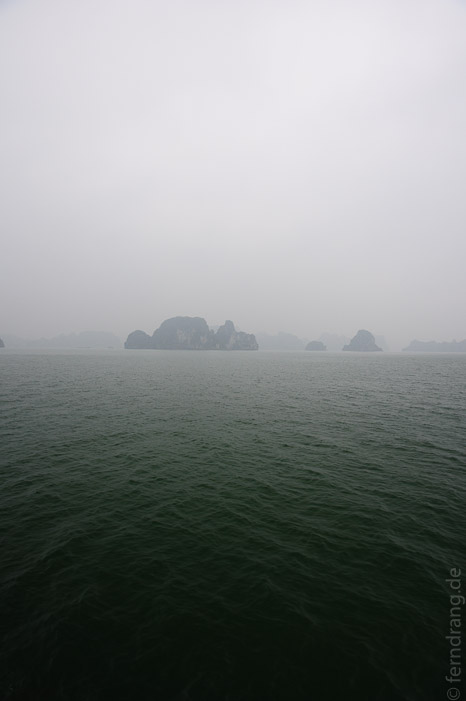
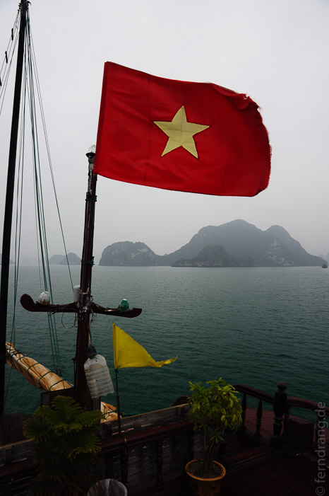
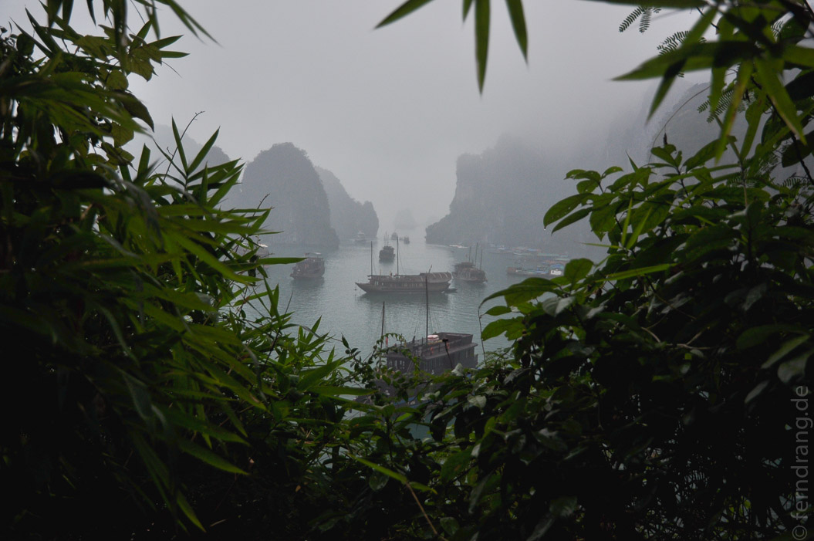
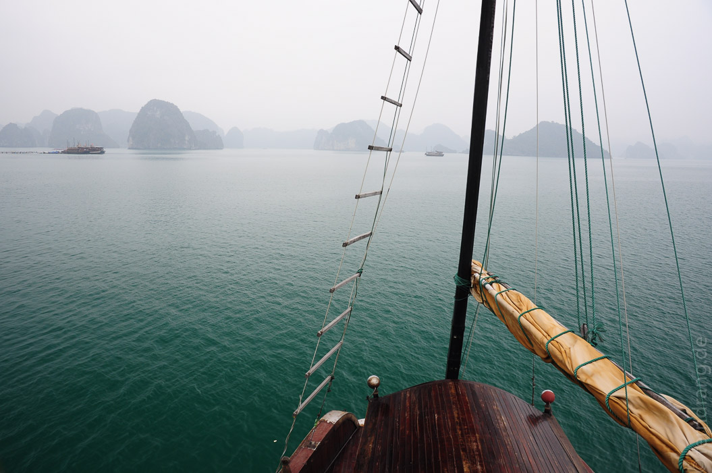
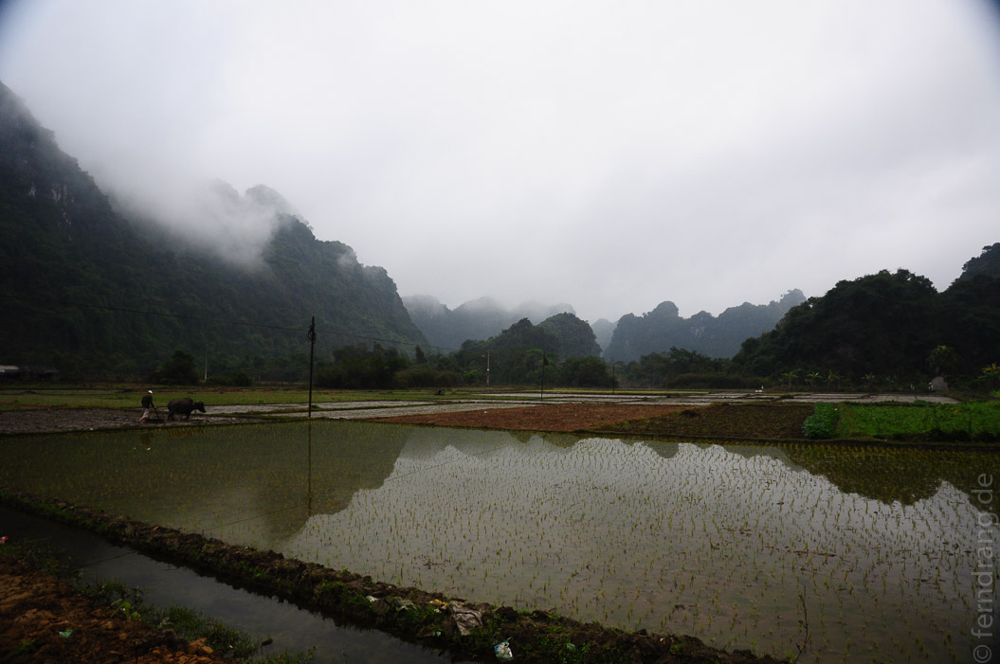
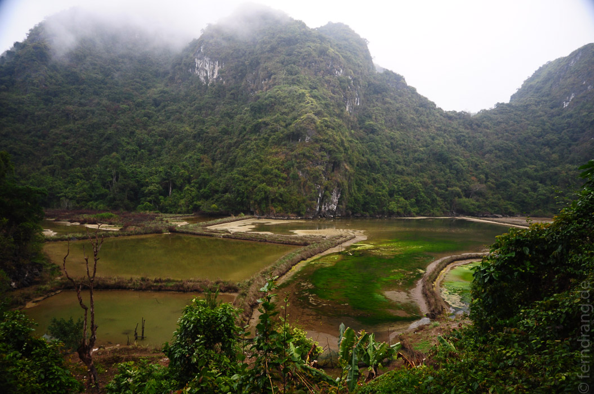

Vier Stunden östlich von Hanoi befindet sich die berühmte Halong Bucht. In dieser Ecke des Südchinesischen Meeres ragen überall Karstberge wie Pilze aus dem flachen Wasser. Das Wetter ist noch etwas kühler und noch viel nebliger als in Hanoi. Dadurch wirkt die Bootsfahrt durch die Bucht wie eine Fahrt durch eine chinesische Tuschezeichnung. Unwirklich tauchen die senkrechten Berge aus dem grünen Meer auf. Durch die ewigen Gezeiten sind sie unten ausgehölt und unterspült worden, was die Szenerie noch fragiler werden lässt.
  Die erste Nacht haben wir auf einer der ortsüblichen, aufgemotzten Dschunken verbracht. Wir wurden mit Seafood abgefüllt und von unserer sehr netten Führerin gut umsorgt. Glücklicherweise war unsere Gruppengröße zwei.
Am zweiten Tag haben wir auf der großen Insel Cat Ba Halt gemacht. Von einer kleinen Bucht aus ging es dann mit Fahrrädern einen Meeresarm entlang ins Innere der Insel. Passend zum ziemlich feuchten Klima ist die einzige Farbe auf der Insel Grün und alles komplett überwuchert.
Die Fahrt führte zu einem kleinen Dorf in einem Tal voller Reisfelder. Wir wurden - wieder als einzige Gäste - in der einzigen, einfachen Unterkunft untergebracht und haben unter zwei Extradecken gefroren. Neben regelmäßigen Mastsitzungen im Restaurant stand eine Wanderung auf einen der umliegenden Berge auf dem Programm. Wir haben uns den glitschigen Trampelpfad hochgekämpft und eine tolle Aussicht auf den Nebel ringsherum geerntet.
Am dritten Tag ging es wieder zurück durch die Bucht zum Hafen und anschließend wieder nach Hanoi. Dort sind wir wieder bei dem empfehlenswerten Reisebüro Ocean Tours abgesetzt worden, die uns gleich in den Nachtbus nach Hue umgetopft haben. Wir verlassen Hanoi mit seinem sympathischen Durcheinander wehmütig. Wenn das Wetter nicht so ungemütlich wäre, hätten wir gerne noch mehr Zeit hier verbracht.